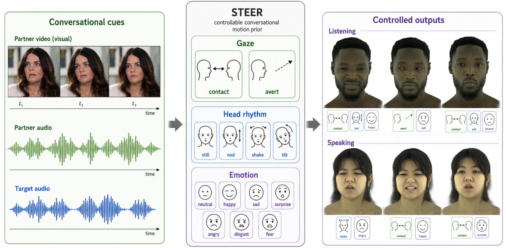
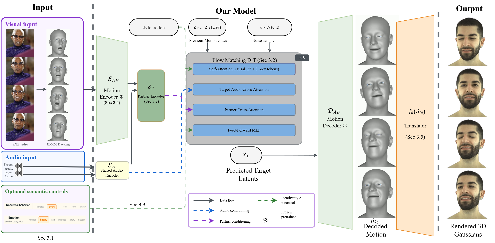

Audio + visual interaction01
STEER Steerable Dyadic Head Avatars
SIGGRAPH Asia 2026 Conference
STEER at a glance
Conversational cues → explicit control → output

Paper abstract
Abstract
Facial movement and expression are central to face-to-face communication, conveying turn-taking, attention, agreement, and engagement alongside speech. While speech-driven facial animation has made strong progress in lip synchronization and audio-conditioned motion generation, most methods treat conversational behavior as an emergent byproduct of audio, or expose only coarse sequence-level affect control. As a result, key non-verbal channels such as gaze contact and aversion, rhythmic head motion, and emotion remain difficult to explicitly control.
We present STEER, a controllable 3D dyadic motion prior for reactive conversational head avatars. STEER factorizes conversational behavior into explicit controls for gaze, head rhythm, and emotion, allowing users to steer how an avatar listens, reacts, and engages with a conversation partner. Since temporally aligned annotations for these behaviors are not available in public dyadic corpora, we introduce a tracking and annotation pipeline that recovers behavioral pseudo-labels from in-the-wild dyadic video. A causal flow-matching transformer then learns partner-aware target motion conditioned on audio, partner motion, emotion and the proposed behavioral controls.
We further embed STEER in a photorealistic avatar pipeline by extending a Universal Gaussian Head-Avatar Prior with a learned mapping from tracked parametric motion into its avatar-driving space. This enables controllable animation of high-fidelity Gaussian head avatars without re-training the underlying avatar model. STEER outperforms recent dyadic motion baselines on motion quality, dynamics, and diversity, remains competitive on partner coupling, and enables gaze, head-rhythm, and emotion edits together with an interactive live deployment.
Motivation
Listen · interpret · respond
Project video
STEER, in full.
STEER · 09:11
Download video
Dyadic interaction
Partner-aware reactions.
Controlled roles
Listening and speaking.
Method
Track. Generate. Translate.
Behavior annotation
Time-aligned pseudo-labels capture gaze, head rhythm, and emotion from dyadic video.
Causal motion prior
A flow-matching transformer generates target motion from both partners and the semantic controls.
Avatar bridge
A learned translator maps motion into a frozen universal Gaussian head-avatar prior.

Dataset annotation
Control needs labels.
STEER builds the missing supervision from dyadic video by combining facial tracking, head and eye pose, action units, coarse emotion, and kinematic decomposition.
10,555filtered clips
9,790training clips
765held-out clips
Tracked behavior signals and emotion pseudo-labels Download
Citation
STEER
Kartik Teotia, Helge Rhodin, Hyeongwoo Kim, Marc Habermann, and Christian Theobalt. 2026.
@article{teotia2026steer,
title = {STEER: Steerable Dyadic Head Avatars},
author = {Teotia, Kartik and Rhodin, Helge and
Kim, Hyeongwoo and Habermann, Marc and
Theobalt, Christian},
year = {2026}
}